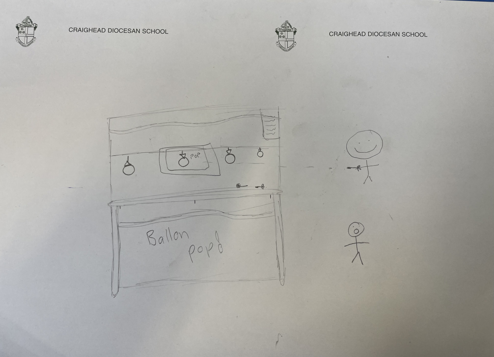

My Project
In our Year 10 Digital Technology class, we built games for people to play at the Year 10 Market Day. My project was a game called Ballon Pop
Our game ballon pop is a game that you can play, for only $2 for 2 darts. The ballons are going around the structure and you have to throw the dart and hit the ballon while its going past the middle of the box to win a bag of lollies. The microbit will pick up if the sound is loud enough when the ballon pops and that means you won. Me and my team made this structure from scratch, we faced a lot of problems like. Making sure the microbit was in the right place so it could pick up the sound and then making sure it picked up the right amout of sound and wasnt set at a level to high but so it can just hear the ballon pop. When buliding the structure we used a Epro8 kit and used other things from around the classroom, there were many challenages such as, where it put the sign, how far back they should stand to throw the darts, how big our structure should be and how fast we want the balloons to go around. A big problem we had was with the string that went around the frame that has the ballon attached to it wouldn't go around the cornners since the ballons were to big and we had a knot in the sting to tie it together. To fix this problem we put rubberbands on the ends of the ballons and then tied it to the string to that the ballons would hang lowed and there wasnt to thick when going around the conners. Another problem was when we were making the rastabation for the big ballon pop sign we got the dimentions wrong so we had to change it and print it out and stick it together 3 which cost us a whole lesson.
To build the structure we used metal rods from the Epro8 kit to make a rectangle type shape so the ballons could go around it. We connected the rods together with the connecters and screws from the kit, we also used things from the kit to put on the rods the were smoothe so the sting could go around it. Then we moved onto getting cardbord form the bin and figuring out a logo and name for our game. We came up with the name ballon pop and Grace created a sign for our game. We had to print this out using rastabation so that the sign would be big enough and atract people, this did not work very well. We made out signs and pick out what we wanted to give people as prizes which was a little bag with some lollies in it. We managed to finish our game in the short amount of time we had.
For the digi part of the project we set up a microbit that sat near where the ballons would be popped and we programed it to pick up the sound but only if it was above the sound level 70,and if it was then it would sent a message to another microbit that I was holding in my hand and show a ghost so I know it was loud enough, that would mean the person won. This took a long time to get the microbit working right and making sure the sound level wasn't set to high or to low otherwise the game would be to easy and it would pick up other sounds around us. To get the sound right we clapped next to the microbit trying to make it sound as loud as a ballon. The next hard part was getting the microbit that picked up the sound to show the icon on the other microbit I was holding, we had to do another set of code for this and connect them to each other so that it would send a radio signal to the microbit and show th4e icon and then erase the screen.
Market day quckly came around and we were already setting up out game out on the lawn for people to play. We had to bring all the stuff that we had bulit down and had to do lots of trips back and forth. we brought down the structure and the ballons and set it all up then set up the microbits. people started crowding around all the creations but ours wasnt one people were very interested in. Maybe this was because out stall was over in the cornner and not as out in the open as the others and also because our game probably didn't look as exciting as the others. Threw out the time we had about 5 people wanting to play our game and when the time was almost over we started selling the left over lolly bags we had to make some more money.